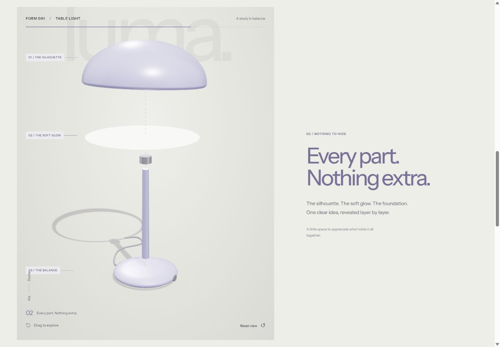

An interactive product website can give visitors something a photograph cannot: control over the view. They can turn an object, compare a finish, or see how separate parts fit together. That becomes useful when the interaction answers a question someone needs to resolve before enquiring or buying.
For a Cheltenham maker, independent retailer or product business, the starting point is the product and its customers. A beautifully executed 3D scene can be a strong choice. So can a thoughtful set of photographs. Decide what people need to understand before deciding how the page should move.

See the idea in action
LUMA / 01
On desktop, scroll to take the lamp apart. Try its finishes, shade shapes and lighting controls on desktop or mobile.
Original concepts for fictional brands, created by Singularity Shift.
Start with the question the product creates
Write down the things customers struggle to judge online. A sculptural lamp might raise questions about its profile, the relationship between its base and shade, or how different colours change its character. A patterned fabric might need detailed photography that shows weave and texture. A food product may need convincing pictures and clear ingredient information.
Turn those uncertainties into tasks for the website:
- See the product from an angle that matters.
- Compare two genuine options.
- Understand the size or relationship between components.
- Find dimensions, materials and practical details.
- Move from interest to a relevant enquiry or product page.
If the proposed interaction does not help with one of these tasks, consider whether the same effort would improve the photography or explanation more.
What the LUMA concept demonstrates
Explore the LUMA lighting concept as an example of an interactive product presentation. It is a fictional brand and a working demonstration, rather than a commissioned shop or an available lighting range.
You can rotate the lamp, choose a finish, switch its shade shape and adjust the displayed brightness. On a sufficiently large screen with motion enabled, scrolling turns the object and separates its components before bringing them together again. The sequence makes the relationship between the parts visible.
The saved combination stays in the browser. The concept does not take orders, check availability or calculate a product price. Those commercial responsibilities would be separate parts of a real project.
This distinction matters when assessing a portfolio. A convincing product scene demonstrates presentation and interaction; it does not establish that an ordering system has been built.
Choose photography when the surface is the story
Photography is often the clearer starting point for handmade pieces, natural materials and products whose individual variation matters. A series of carefully chosen views can communicate finish, scale and use without asking visitors to manipulate anything.
Useful photographs might include a complete view, a close detail, the object in its intended setting and an image showing its size against something familiar. Ask which images will answer questions and which will simply repeat the same composition.
A real product site can also combine both approaches. Photography can establish the object and its material character, while a small interactive view explains a specific feature. The photography and art direction guide covers how to prepare a coherent visual set.
Understand the work behind the model
A 3D presentation needs an object that can be represented accurately. The starting material could be an existing model, measured drawings or a new model made for the website. Agree who supplies it, what can be reused and who checks the result against the real product.
The lighting and materials also require judgement. A screen preview should help visitors compare options, but it should not make a precise colour or texture promise that the business cannot support. For a physical product, keep written finish names and relevant specifications close to the scene.
Ask how the model will be maintained when a component, finish or product range changes. An attractive one-off demonstration can become awkward if every small catalogue update requires rebuilding the presentation.
Give visitors a straightforward route through
The essential product information should remain available without completing a scroll sequence or discovering a hidden gesture. Give the scene an obvious instruction, make controls understandable and provide a way to return to a useful viewing angle.
Plan an alternative view for devices that cannot run the scene. Hardware capabilities vary; MDN's WebGL guidance specifically cautions against assuming that the developer's machine represents visitors' systems. A good static illustration or photograph can keep the product understandable when the interactive layer is unavailable.
Also agree how motion changes on smaller screens and for people who request reduced motion. These are design decisions to make alongside the desktop presentation.
Decide what a useful first version includes
A sensible first version might focus on one representative product and two or three meaningful choices. That gives you something concrete to review before adapting the approach to a complete range.
Judge the prototype by asking someone to explain the product, find a specification and identify their preferred option. Watch where they hesitate. Enjoyment is valuable, but it should lead somewhere useful.
If visitors need to build an order from their choices, read the product configurator planning guide. That work includes rules and business processes beyond the visual model.
James builds websites and interactive experiences in Cheltenham. Send a product link, a few images and the question customers keep asking to discuss whether photography, a focused interaction or a fuller 3D presentation would suit your business.